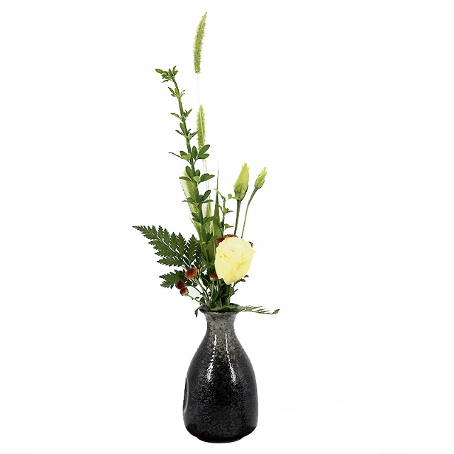
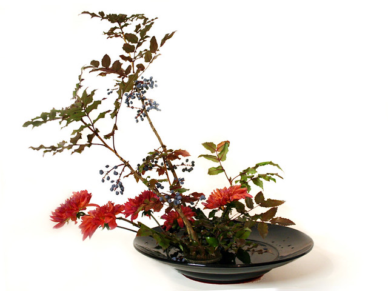

Phan Minh, 8-3-2019
Ngày nay chiêm ngưỡng những tác phẩm cắm hoa, tìm hiểu và nắm vững được nghệ thuật cắm hoa đã trở thành ước muốn của nhiều người, nhất là phái nữ. Tuy nhiên, nắm vững được nghệ thuật cắm hoa đã không là chuyện giản đơn. Nó đòi hỏi người cắm hoa phải thông qua quan sát trong thực tế, nắm bắt được "cái thần" của hoa lá, hiểu được quy luật biến hoá của cây cỏ và sự hoà đồng của màu sắc.
Từ trước, nghệ thuật cắm hoa có nhiều trường phái. Do có sự khác nhau về khu vực, môi trường, bối cảnh văn hoá, không gian phát triển, cho nên nghệ thuật cắm hoa cũng khác nhau. Nghệ thuật này bắt nguồn từ 3 nơi khác nhau: cắm hoa kiểu Nhật, cắm hoa kiểu Trung Quốc, cắm hoa kiểu Tây Phương.
Lịch sử trồng hoa của người Trung Quốc vốn có từ lâu đời. Bên cạnh việc trồng hoa, nghệ thuật cắm hoa ở đây cũng có lịch sử và truyền thống lâu đời. Ngoài việc coi trọng về hình dáng, màu sắc và mùi hương của hoa, nghệ thuật cắm hoa kiểu Trung Quốc còn chú trọng đến "hoa đức". Theo họ, hình dáng, màu sắc và mùi hương chỉ là "hữu hình"; còn "hoa đức" thì lại trừu tượng, thường mang ý nghĩa tượng trưng; chẳng hạn như lấy sự mềm mại của hoa để so sánh với vẻ đẹp yểu điệu của nữ giới; đồng thời, cũng cách chọn hoa những để mô tả đức độ của bậc chính nhân, quân tử. Điều này đã trở thành một đặc tính riêng của nghệ thuật cắm hoa Trung Quốc.
Bình hoa cắm gốm Zen đen vàng Trung Quốc
Tới thế kỷ thứ XIV, giới quý tộc Nhật có những ngày lễhội thưởng hoa hằng năm gọi là "Hoa ngự hội" (thi cắm hoa), coi cắm hoa như là một môn nghệ thuật tiêu khiển, nhàn dật; kể từ đó trở đi, cắm hoa đã thoát dần màu sắc tôn giáo thuần túy, bước vào cung đình và các gia đình võ sĩ, quý tộc, trở thành một sản phẩm nghệ thuật để trang trí và xuất hiện trong những lễ hội.
Cũng từ đó hình thức cắm hoa bắt đầu được quy phạm hóa, vừa coi trọng chủ đề tư tưởng, vừa tôn sùng thiên nhiên; họ thường dùng 7 - 9 cành hoa, kết hợp với một số lá: hình thức "lập hoa" thời kỳ đầu tiên tại Nhật.
Bình hoa cắm theo kiểu Moribana.
Vào thế kỷ XV - XVI, cắm hoa đã được phổ cập rộng rãi, nghệ thuật cắm hoa có những bước phát triển mạnh mẽ, phong cách nghệ thuật này cũng đã có những bước biến đổi tuơng đối lớn; ngoài hình thức "lập hoa" đã hoàn thiện, lại còn có hình thức "sinh hoa". Đây là hình thức cắm 3 cành hoa chính, tượng trưng cho Trời, Đất, Người.
Tác phẩm thường đơn giản, trong sáng, thanh nhã, được phổ cập và phát triển mạnh mẽ. Như thế, triết lý và tư tưởng từng bước đi vào nghệ thuật cắm hoa. Vào cuối thế kỷ XVII, "Bình sử" xâm nhập Nhật Bản vàđược phát huy, tạo thành "trường phái Hoằng Ðạo". Sau thế kỷ XVIII, Nhật Bản tiếp tục xuất hiện trường phái cắm hoa "Tự do"; trường phái này không giống như "lập hoa" và "sinh hoa", mà dựa vào trực giác và cảm giác, kết hợp với nhau tùy ý niệm của mỗi người, không quá câu nệ vào hình thức nào. Đến thế kỷ XIX, nghệ thuật cắm hoa của Nhật vào giai đoạn thoái trào, do ảnh hưởng của xã hội và chính trị thời đó; mãi cho đến năm 1887, mới được hồi phục trở lại; tuy nhiên, trong giai đoạn này, với việc giao lưu cùng nhiều dòng nghệ thuật nước ngoài, nhất là ảnh hưởng của văn hoá Tây Phương cho nên phong trào cắm hoa của Nhật lại chuộng về kiểu "Thịnh hoa" (tức là kiểu Moribana).
Hoa đạo của Nhật từ đó cũng đã chuyển hướng, từ cắm hoa trong bình cao lại chuyển sang bình thấp và nông. Kiểu cắm hoa Moribana có thể được coi là bước đột phá trong lịch sử cắm hoa Nhật Bản; tuy nhiên bước đột phá này vẫn chưa làm cho giới thưởng thức hoa và nghiên cứu cắm hoa Nhật bản thoả mãn. Vào thế kỷ XX, hoa đạo Nhật Bản có chuyển hoá khác, mang tính chất lịch sử; đó là sự xuất hiện kiểu cắm hoa "Tự do" (Free style arrangement), hay còn gọi là kiểu cắm hoa "tiền vệ" (Avant - garde Ikebana). Ở một mức độ nào đó, kiểu cắm hoa này có những đường nét gần gủi với phong cách cắm hoa hiện đại của Tây Phương. Với người Nhật, chính lối này đã mang lại cho nghệ thuật cắm hoa Nhật trở nên rực rỡ, chói sáng. Người Nhật thường truyền tụng những giai thoại về nhìn hoa, thưởng hoa và vẽ hoa.
Nói chung, người sành về hoa có thể nhìn suốt từ trước đến sau, từ nội tâm ra ngoại cảnh.
Nghệ thuật cây cảnh Tây Phương bắt nguồn từ khu vực ven Địa Trung Hải và phát triển đến ngày nay, đã trở thành một trong những trào lưu nghệ thuật cắm hoa chính - cắm hoa theo phong cách Tây Phương. Lịch sử cắm hoa ở đây vốn có từ lâu đời. Sách sử và di tích khảo cổ cho biết: Ngay từ những năm 2,000 trước Công nguyên, thời kỳ của nền "Văn minh sông Nil", tại Ai Cập đã có những bức họa trên tường đá, mô tả việc dùng hoa sen và hoa thủy tiên trong cách trang trí. Cũng có người dùng những loại hũ có miệng hẹp để cắm hoa. Trong Kim Tự Tháp của Ai Cập, người ta cũng đã phát hiện ra dấu tích của một loài hoa hoá thạch. Đó là loại tường vi, rất phổ biến trên đất nước này.
Phương pháp cắm hoa trong giai đoạn này còn thô sơ: vừa không có vẻ đẹp về đường nét, lại vừa không có những kết hợp nhiều loại hoa bên cạnh nhau. Từ thời kỳ Cổ Hy Lạp cho đến thời Hậu Kỳ Cổ La Mã, người ta thường dùng hoa vàng để trang trí trong những lễ hội. Thiếu nữ cũng thường đội những vương miện được kết bằng hoa hồng. Kiểu dáng này biểu trưng cho lòng chung thủy trong thuật yêu đương. Trong nghệ thuật cắm hoa và kết hoa Tây Phương, kiểu này vẫn còn bảo lưu cho đến ngày nay với những thay đổi qua từng thời đại. Có hai kiểu cắm hoa trong giai đoạn này: cắm hoa ở lọ và cắm hoa trong lẵng.
Vào thế kỷ XIX, hạng quý tộc, giới thượng lưu Tây Phương bắt đầu quan tâm và say mê nghệ thuật cắm hoa, từ việc xử lý nghệ thuật cắm hoa cho đến cách phối hợp màu sắc nhiều loại hoa. Ngoài ra, cũng có những nghệ nhân chế tác các bình hoa, chậu hoa đủ kiểu dáng; có người lại chuyên nghiên cứu về không gian cắm hoa. Họ đề ra những nguyên tắc về cắm hoa, với nhiều trường phái. Tính ra có 32 trường phái cắm hoa khác nhau. Cắm hoa đã trở thành một lối trang trí và thưởng ngoạn trong bất cứ hội họp, tiệc tùng, nhàn đàm. Vào đầu thế kỷ XX, nhà nghệ thuật học Gertrude Jekyll cho xuất bản cuốn "Flower decoration in the home" có tác dụng gợi mở rất lớn trong nghệ thuật cắm hoa sau này. Đây là nền tảng của nghệ thuật cắm hoa Tây Phương hiện đại. Những thập niên gần lại đây, nghệ thuật cắm hoa Tây Phương đã chịu ảnh hưởng của Hoa đạo Nhật cũng như Thiền Phái, do đó đã nẩy sinh những kiểu cắm hoa đa dạng, thiên về triết lý.
Nghệ thuật cắm hoa cổ điển chỉ hạn chế ở chỗ cắm hoa vào bình. Người cắm hoa chỉ chọn một cành ít hoa, rồi tạo hình và chọn độ dài thích hợp. Hình thức cắm hoa trong thời đó còn đơn giản, thuần phác, thường chỉ giữ lại kiểu dáng của hoa chứ không gia công về mặt kỹ thuật và nghệ thuật. Lọ hoa đa phần bằng gốm. Ngoài ra, trong giới quý tộc, vương tước thì dùng những thứ lọ bằng ngọc thạch, thủy tinh. Trong những bức hoa cổ điển cho thấy màu sắc thiên về sự rực rỡ, chói chang.
Nghệ thuật cắm hoa cổ điển Trung Quốc thường tạo ra những khoảng trống thích hợp giữa các cành hoa với nhau; nhờ thế tạo nét thanh nhã. Nghệ thuật cổ điển Nhật thường tận dụng cành lá đơn giản, thể hiện rõ đường nét của cành hoa. Cắm hoa cổ điển Tây Phương thích sự đàng bệ, dùng hoa nhiều, bình to. Nghệ thuật cắm hoa hiện đại không những được sáng tác dựa theo nguyên tắc cắm hoa cơ bản, cũng không đơn thuần thể hiện sự hoà hợp của thiên nhiên, mà chủ đích là để biểu đạt quan niệm và tư tưởng của cá nhân mỗi người.
Trong nghệ thuật cắm hoa hiện đại, cần phải có trí tưởng tượng lựa chọn cành hoa nào, thiết kế ra sao, cách tạo hình theo chủ điểm gì? Với họ, chậu hoa là nguồn thơ, là nguồn tư tưởng, triết học. Mỗi công trình cắm hoa phải là một giá trị biểu cảm. Phải bỏ nhiều thì giờ suy nghiệm, cân nhắc, trước khi bắt tay vào. 3 khuynh hướng cắm hoa chính hiện nay là trường phái "cắm hoa tự do", "cắm hoa tiền vệ" và "cắm hoa trừu tượng".